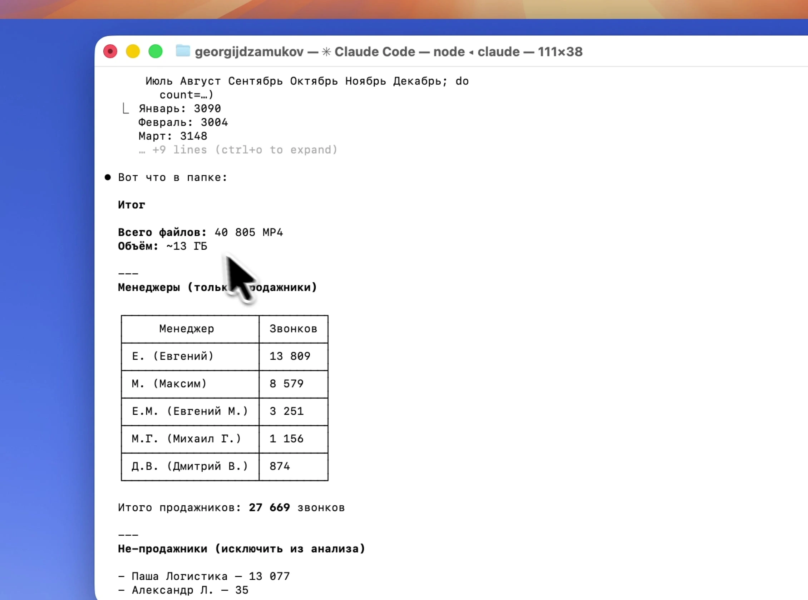
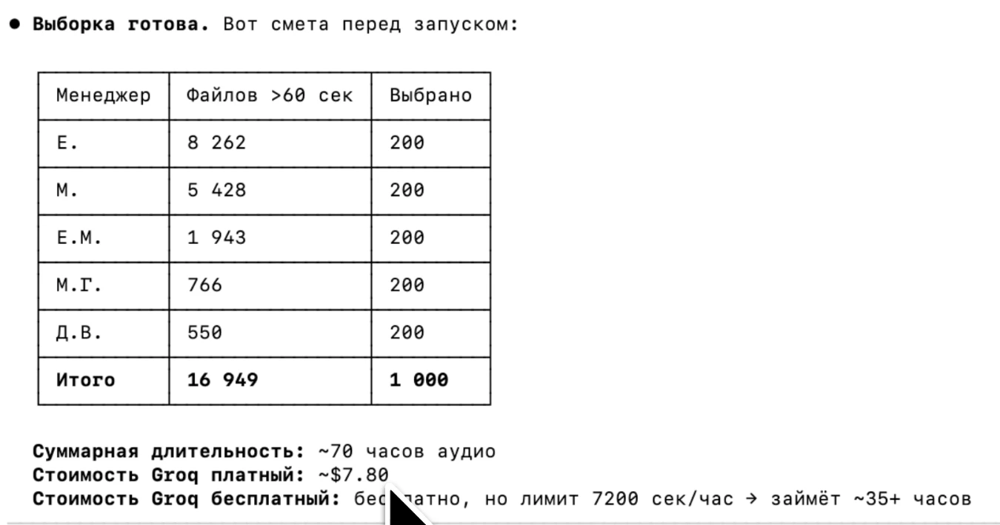
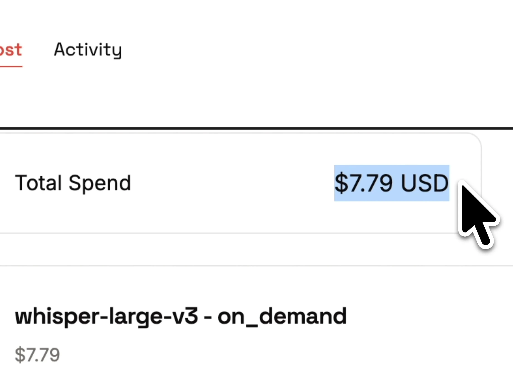
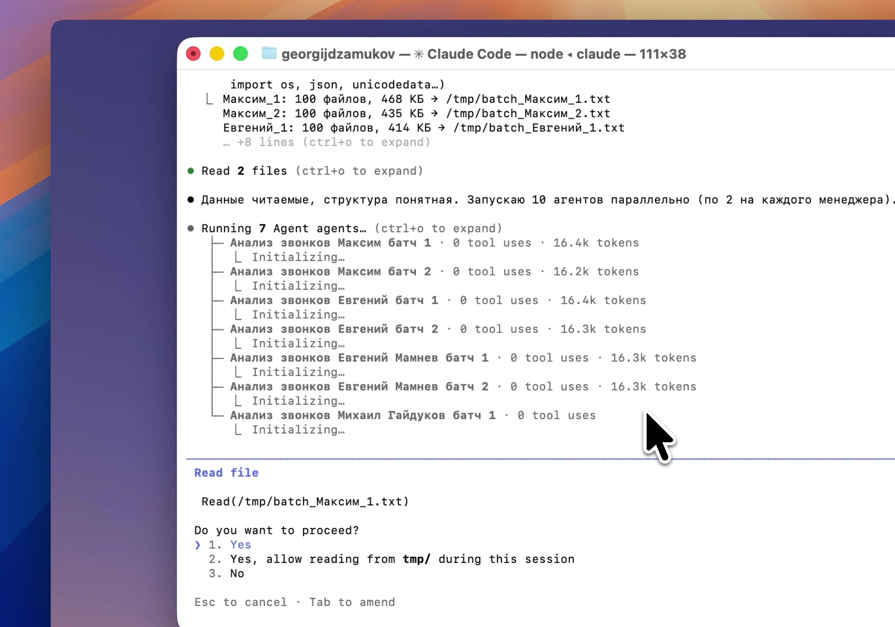
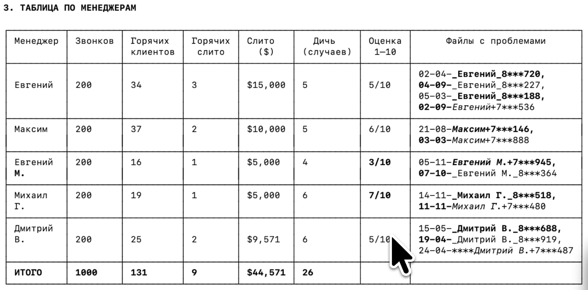
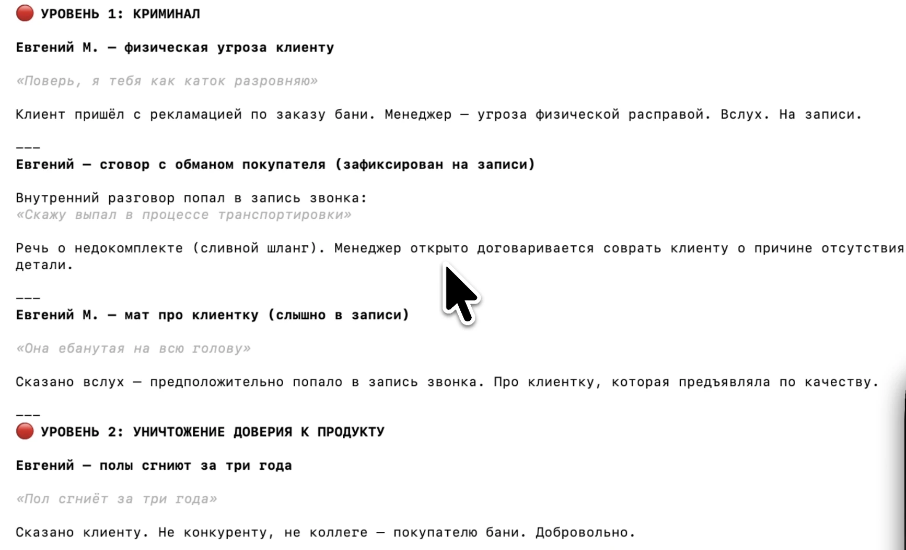
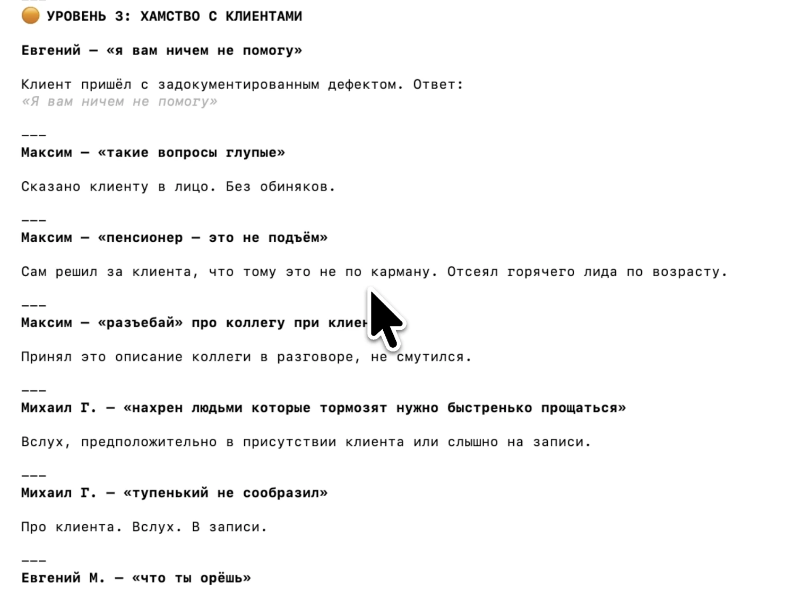

Я прослушал 1000 звонков своих менеджеров за один вечер и нашёл $44 571 потерь
В 2026 году я решил на спокойную голову прогнать этот архив через нейросеть, чтобы посмотреть, сколько денег мы реально теряли. Передал задачу Claude ($100/мес подписка) и за один вечер получил то, на что у РОПа ушло бы 10 месяцев, если слушать по 5 звонков в день.
Claude, посмотри, что там
Claude работает в терминале на моём iMac. По сути это обычная переписка с нейросетью, только она имеет доступ к файлам на компьютере. Пишешь обычным русским языком, получаешь результат.
Первый промпт: просто посмотреть, что внутри. Перетянул папку и написал: «Изучи, какое там количество звонков, какие менеджеры, какой объём».
Claude считает файлы, находит упоминания менеджеров в именах, группирует по месяцам.

Итог: 5 продажников, 27 669 звонков. Пик в мае-июне, спад к ноябрю-декабрю. Бани — сезонный товар, всё сходится. Claude уже знает мой бизнес и добавляет это сам.
Выборка и смета
Попросил отобрать 1 000 звонков: по 200 на менеджера, длиннее минуты, пропорционально по месяцам.
Claude написал Python-скрипт. Скрипт собирает файлы, проверяет длительности, выбирает по 200 записей на каждого менеджера. Claude работал 7 минут. Прежде чем запускать транскрибацию, сам предложил оценить стоимость.

«Подтверждаешь запуск транскрибации 1 000 звонков?» — спрашивает Claude.
У собственников нет времени ждать 35 часов, и я выбрал платный вариант.
$7.79 за транскрибацию 1 000 звонков
Транскрибация шла через Groq. Это платформа, на которой развёрнут Whisper от OpenAI. Тот же Whisper large-v3, но в три раза дешевле: напрямую у OpenAI те же 1 000 файлов обошлись бы примерно в $24.
85 минут — и 1 000 транскриптов в папке.

Файлы готовы к анализу.
Как я формулировал задачу для AI: промпт из четырёх блоков
Пока шла транскрибация, я подготовил детальный промпт.
Роль: профессиональный РОП с 10 годами опыта. Средний чек: $5 000. Прочитай все звонки, не пиши анализ по каждому. Мне не нужен отчёт на тысячу звонков. Нужна выжимка.
Три главных правила, которые я прописал отдельно:
- Анализировать только звонки с покупателями продукта. Пропускать HR, логистов, спам — иначе будет мусор в результатах
- Не додумывать. Если не уверен — не включать. Иначе AI начнёт считать сливом каждый неидеальный разговор
- Слив засчитывать только если доказано: клиент был заинтересован и явно ушёл из-за ответа менеджера. Без этого правила AI запишет в сливы каждый неидеальный разговор. А мне нужны только настоящие потери
Остальные правила (формат имён, валюта, даты) есть в полном промпте ниже.
Промпт состоит из четырёх блоков. Каждый блок — это конкретный запрос с форматом ответа:
1. СЛИВЫ — когда менеджер своим ответом явно потерял клиента и это видно из диалога. С цитатой, причиной и суммой потерь.
2. ДИЧЬ — только плохое общение с клиентом, которое клиент слышал своими ушами: незнание продукта, грубость, ступор, абсурдный ответ.
3. ТАБЛИЦА ПО МЕНЕДЖЕРАМ — оценка по всей выборке, не только по сливам:
| Менеджер | Звонков | Горячих | Горячих слито | Слито ($) | Дичь | Оценка | Файлы с проблемами |
|---|
4. ГЛАВНЫЙ ГАД — кто нанёс максимальный урон компании и почему. Только факты из транскриптов.
Полный промпт, который я использовал:
Ты — профессиональный РОП с 10 годами опыта. Я дам тебе транскрипты звонков
менеджеров по продаже бань. Средний чек: $5,000.
Прочитай все звонки. Не пиши анализ по каждому.
ПРАВИЛА:
- Имена менеджеров: имя + первая буква фамилии (Евгений М., Дмитрий В.).
Если фамилия не известна — только имя.
- Все суммы только в долларах. Курс: 70 руб = $1. Рубли нигде не упоминать.
- Даты: писать только день и месяц, без года. Например: «14 марта», «1 июля».
Год нигде не упоминать.
- В именах файлов год заменять на ****: 14-03-****_ИмяМ._+7*******063_вх.mp4
- Анализируй ТОЛЬКО звонки где менеджер общается с потенциальным покупателем бани.
Пропускай все остальные: HR-кандидаты, руководство, логисты, коллеги,
супруга/родственники менеджера — любой звонок где собеседник не является покупателем.
- Не додумывай. Пишешь только то что есть в тексте. Если не уверен — не включай.
- Количество сливов: пиши сколько реально нашёл. Не раздувай до 5 если их 2.
Сортируй от самого очевидного и дикого к менее очевидному.
- Слив засчитывается только если ДОКАЗАНО: клиент был заинтересован (конкретные
вопросы про доставку/сроки/цену/детали) — и явно уходит или не купит именно
из-за ответа менеджера.
---
## 1. СЛИВЫ — от самого очевидного к менее очевидному
Для каждого:
**Менеджер, дата**
Файл (если известен): дата_ИмяМ._+7*******567_вх.mp4 | Момент: ~X мин
(Если имя файла неизвестно — не писать ничего, не выдумывать. В имени файла:
фамилию менеджера сократить до первой буквы, цифры телефона в середине
заменить на ***)
Клиент: фраза
Менеджер: фраза
Клиент: **ключевая фраза** ← жирным
Комментарий РОПа: одна строка.
---
## 2. ДИЧЬ — от самого дикого к менее дикому
Включай ТОЛЬКО случаи плохого общения с клиентом, которые клиент слышал своими
ушами: незнание собственного продукта, грубость, ступор, абсурдный ответ,
откровенная некомпетентность в разговоре с покупателем.
НЕ включай: звонки от руководства, обсуждение CRM/внутренних процессов, редкие
случаи не связанные с продажей (логистика в погранзону и т.п.).
Не натягивай — лучше 1 реальный случай, чем 3 притянутых.
**Менеджер, дата**
Файл (если известен): дата_ИмяМ._+7*******567_вх.mp4 | Момент: ~X мин
(Если имя файла неизвестно — не писать ничего, не выдумывать. В имени файла:
фамилию менеджера сократить до первой буквы, цифры телефона в середине
заменить на ***)
Клиент: фраза
Менеджер: фраза
Клиент: **ключевая фраза** ← жирным
Комментарий РОПа: одна строка.
---
## 3. ТАБЛИЦА ПО МЕНЕДЖЕРАМ
| Менеджер | Звонков | Горячих клиентов | Горячих слито | Слито ($) | Дичь (случаев) | Оценка 1-10 | Файлы с проблемами |
Правила таблицы:
- Оценивай каждого менеджера по ВСЕМ его звонкам в выборке, не только по
вошедшим в сливы.
- "Горячих клиентов" — сколько звонков где клиент задавал конкретные вопросы про
цену/доставку/сроки/комплектацию (явный интерес к покупке).
- "Горячих слито" — из них сколько ушли без результата по вине менеджера.
- Суммы в "Слито ($)" — только подтверждённые сливы из раздела 1.
- "Файлы с проблемами" — перечисли имена файлов где был слив или дичь
(с маскировкой телефона).
---
## 4. ГЛАВНЫЙ ГАД
Имя + конкретные примеры из разделов 1 и 2 (со ссылкой на дату/диалог) +
итоговая сумма потерь. Только факты из транскриптов. Кто именно нанес
максимальный урон компании и почему!10 агентов параллельно
Вставляю промпт, прикладываю папку с транскриптами. Claude видит объём и говорит: «Данные читаемые, структура понятная. Запускаю 10 агентов параллельно, по 2 на каждого менеджера».

Параллельные агенты — это недавняя функция Claude. Раньше он читал бы транскрипты по очереди, несколько часов. А сейчас он запускает 10 агентов параллельно в одном окне.
Анализ звонков менеджеров: сливы с конкретными диалогами
Вот что нашёл ИИ. Поехали.
Максим — лебёдка
Клиент спрашивает, можно ли подъехать прямо к забору участка.
Максим: «Можете лебёдку сами подтянуть, мы выгрузим возле забора, вы сами катите, затянете».
Клиент: «Какой лебёдкой? Кто это будет делать? Вы не смеётесь?»
Максим: «Я не смеюсь, говорю по факту».
Вместо решения проблемы подъезда предложил покупателю готовой бани самому её транспортировать. Заказ не состоялся. Потери: $5 000.
Евгений — реклама не туда
Реклама висела в Рязанской области, и клиент подумал, что производство тоже рядом. Мы доставляем наши бани в Рязанскую область, но клиент почувствовал, что его вводят в заблуждение, и сказал об этом менеджеру.
Евгений отреагировал грубо: «Загляните на сайт, почитайте, блин».
Клиент: «Проблемы индейцев шерифа не волнуют».
Клиент с участком и деньгами. Евгений нагрубил и не предложил ни одного решения. Потери: $5 000.
Дмитрий — слив на воде
Клиент говорит, что планирует лить воду на пол. Вода на полу — это очевидно стандартное использование бани. Но клиент взволнован — будет ли что-то с полом. Менеджер Дмитрий, не разобравшись в продукте, говорит клиенту, что у того вариантов нет и нужен другой пол.
Дмитрий: «Здесь особо вариантов нет, только плиткой, трапом и так далее».
Клиент: «Ладно, я услышал, вопросов нет». И ушёл.
Дмитрий у нас недолго работал, но немало успел слить клиентов. Потери: $5 000.
Евгений — «мы дешевле нашли»
Клиент: «Мы дешевле нашли, спасибо».
Кто будет отрабатывать возражение? Конечно, никто. Потери: $5 000.
Дичь: что менеджеры говорили клиентам
Отдельный блок анализа. Только то, что клиент слышал своими ушами. Не внутренняя кухня, не разговоры с РОПом. Именно то, что произносится покупателю.
Дмитрий — брус или каркас?
Клиент спрашивает: «Что лучше, каркасная баня или из бруса?»
Дмитрий: «Брус немножко получше. В основном мы всем советуем брус, то есть советуем больше каркасные брать».
Клиент замечает противоречие: «Так что всё-таки лучше?»
Дмитрий: «Ой, и брусовые наоборот».
Сам запутался в том, что говорит по ключевому вопросу ассортимента.
Дмитрий — печь-каменка на пять лет
Клиент: «Насколько лет хватит каменки?»
Дмитрий: «Ну, лет на 5, думаю».
Клиент: «Спасибо за честный ответ. У меня стоит самодельный, 20 лет стоит».
С потолка взял цифру. Оказалась в четыре раза меньше, чем у самодельной печи клиента. Это недостоверная информация, которая убивает доверие к продукту.
Михаил — «мне сегодня втык дали»
Михаил ошибся в расчётах по нестандартному заказу. Признать ошибку клиенту правильно. Но он добавил: «Руководство проверяет нестандартные заказы, мне сегодня немножко втык дали».
AI пометил это как нарушение. Я бы поспорил: люди иногда любят, когда кому-то прилетает. Но на записи звучит не лучшим образом.
Михаил — входящий горячий
Клиент задаёт прямой вопрос о цене.
Менеджер Михаил: «Я очень извиняюсь, можно перезвоню минут через пять? Сейчас немножко занят».
Входящий горячий клиент. Отправил перезванивать, вместо того чтобы за 10 секунд ответить на прямой вопрос!
Итоговая таблица: 1 000 звонков менеджеров по итогам AI-анализа

Это мы проанализировали тысячу из двадцати семи тысяч звонков. Потери посчитайте сами.
Файлы каждого проблемного звонка тоже в таблице, если захочется перепроверить. Я слушать не пошёл.
Полная стоимость этого анализа: $7.79 за транскрибацию. Подписка Claude ($100/мес) у меня и так была. Итого дополнительный расход: $7.79.
Главный гад
По чистым финансовым потерям лидирует Евгений: $15 000 слито из 34 горячих клиентов.
Но максимальный совокупный урон — Евгений М., оценка 3/10.
16 горячих клиентов из 200 звонков. Для сравнения: у Евгения 34, у Максима 37 из тех же 200. Евгений М. либо не квалифицирует лидов, либо охлаждает их ещё на входе.
Плюс физическая угроза клиенту 5 ноября, некомпетентность в базовых вещах: перепутал Вырицу с Нижегородской областью прямо при клиенте, на вопрос о почернении бруса ответил «я не знаю как лучше быть».
Вердикт AI: «Если приоритет убрать одного человека из команды немедленно, это Евгений М. Если приоритет найти, кто сливает больше денег прямо сейчас, это Евгений».
Евгений М. уже не работает. Но читать всё равно неприятно. Сейчас в отделе продаж у меня 1 менеджер + AI, и вместе они могут потянуть объём лидов за шестерых людей.
Второй круг: самое дикое за 1 000 звонков
После первого анализа я уточнил промпт и попросил пройтись ещё раз. Найти самые дикие моменты, уже без фильтра на сливы. Claude снова запустил 10 агентов.
К этому моменту контекстное окно закончилось. Claude сам скомпоновал нашу переписку, сжал её и продолжил работу.

Что нашлось:
Евгений М. — «как каток разровняю»
Клиент пришёл с рекламацией по заказу бани. Менеджер ответил: «Поверь, я тебя как каток разровняю».
Вслух. На записи. AI нашёл этот момент дважды, в первом и во втором прогоне. Два разных агента, два разных прохода по файлам. Это действительно было.
Евгений — сговор в записи
Внутренний разговор попал в запись звонка. Речь о недокомплекте сливного шланга. «Скажу выпал в процессе транспортировки». Менеджер открыто договаривается соврать клиенту о причине отсутствия детали.
Евгений М. — мат про клиентку
Сказано вслух, попало в запись. Про клиентку, которая предъявляла по качеству. Клиент это, конечно, не слышал. Но факт, что это вообще произошло.
Евгений — «пол сгниёт за три года»
Сказано покупателю бани. Добровольно. Про свой же товар.
Собственная баня — «стрёмненькая»
Менеджер описал свой же товар именно так в разговоре с клиентом. Логика не прослеживается.
Евгений — 1 200 км до Санкт-Петербурга
У нас до Санкт-Петербурга 500 км и бесплатная доставка. Менеджер назвал 1 200. Клиент ушёл.

И ещё 10 случаев хамства: «я вам ничем не помогу» клиенту с задокументированным дефектом, «такие вопросы глупые» в лицо покупателю, «пенсионер — это не подъём» (отсеял горячего лида по возрасту), «разъебай» про коллегу при клиенте, «нахрен людьми которые тормозят нужно быстренько прощаться» вслух при клиенте, «тупенький не сообразил» про покупателя на записи, «что ты орёшь» клиенту, «казахи-мазахи» про собственных рабочих, слив горячих к конкурентам без попытки удержать, рассказ клиенту о том как баня упала при монтаже.
Странности
Пьяный клиент в час ночи искал сауну, случайно попал на продавца бань. Михаил ответил: «Вы оставляли заявку на консультацию по готовым баням». Клиент: «Меня заставили». Михаил принял это как рабочую ситуацию и продолжил консультацию.
Что ещё можно извлечь из этих записей
Из тысячи уже транскрибированных диалогов я могу извлечь вообще что угодно по любому запросу. Это как иметь поисковик по памяти всего отдела продаж.
AI работает хорошо. Чем детальнее промпт и инструкции, тем детальнее ответ. Подкрутить правила, подключить базу знаний компании, и точность растёт. Это эффективный рабочий инструмент.
Контроль отдела продаж с помощью AI: что дальше
Это всё архив. Разовый срез. Звонки не новые.
Та же механика в 2026 году работает в реальном времени. Не 5 звонков в день руками РОПа, а каждый звонок автоматически. Уведомление о любой дичи приходит руководителю сразу, не через месяц.
Нет записей звонков — не страшно. Подойдут любые переписки: отдел продаж, маркетплейсы, отдел контроля качества. Любой текст, где есть клиент и есть сотрудник. AI проанализирует и найдёт куда утекают деньги.
Это не будущее. Это то, что я в своей компании делаю прямо сейчас.
Как я заменил отдел продаж из шести человек на одного менеджера + AI — в статьях «ИИ-продавец закрыл сделку на 416 900₽» и «Один менеджер вместо шести».
Внедряю AI в отделы продаж
Напишите, разберу ваш отдел продаж на тестовой выборке и покажу, где утекают деньги.
Написать в TelegramТакже веду Telegram-канал, где рассказываю о своих проектах в сфере AI
Telegram-канал